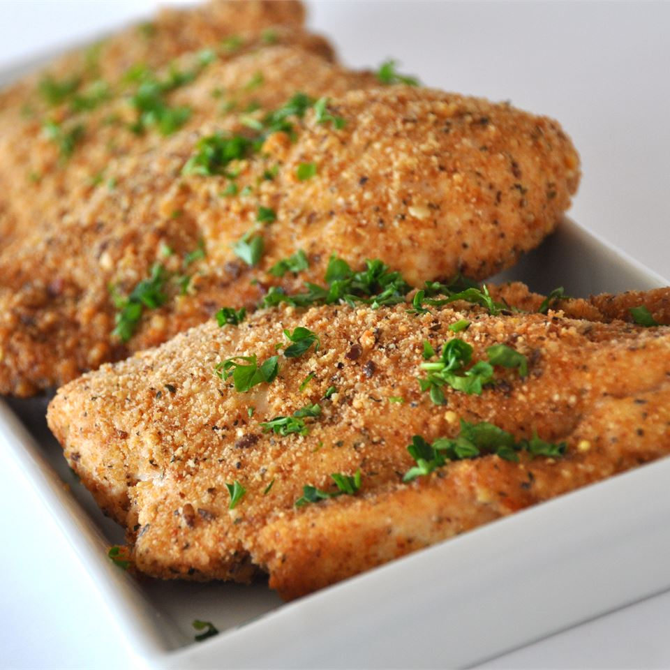

Crispy Breaded Chicken

Breaded chicken is one of my faovirte meals. It is quick, easy, and delicious.
Today I will explain how to make this dish in no time at all. Let us begin.
Ingredients:
- 2 teaspoons of olive oil.
- 1 clove of garlic, minced.
- 1 cup of dried bread crumbs.
- 2/3 cup of grated parmesean cheese.
- 1 teaspoon of dried basil leaves.
- 1/4 teaspoon ground black pepper.
- 6 skinless boneless chicken breast halves.
Steps:
- Preheat the oven to 375 degrees F. Lightly grease a 9x13 baking dish.
- In a bowl, blend the olive oil and garlic. In a separate bowl, mix the bread crumbs, cheese, basil, and pepper.Dip each chicken breast in the oil mixture, then in the bread crumb
mixture. Arrange the coated chicken breasts in the prepared baking dish, and top with any remaining bread crumb mixture.
- Bake for 30 minutes or until chicken is not pink and the juices run clear.